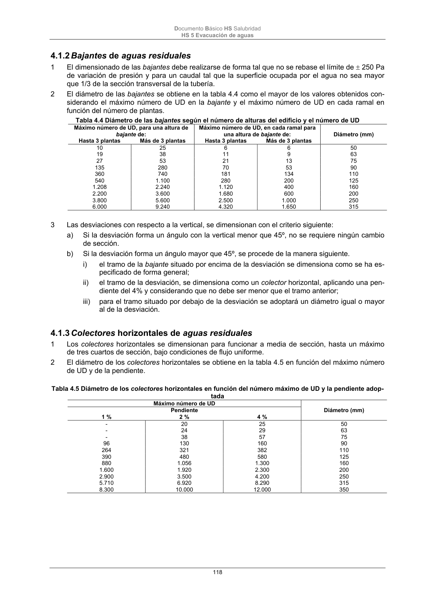

DB-HS Salubridad · edición 2022-06-14 · capa oficial
Documento DB-HS-oficial · SHA-256 del PDF 68df3caacc95f71aee2ec1ba7b2c65ae66155c21e3a8785521b8fdd4fd640d3b
Copia fiel del PDF fuente · Fuente oficial
Ficha de la disposición en la fuente oficial
Formatos: JSON del segmento · Markdown
4.1.3 Colectores horizontales de aguas residuales 1 Los colectores horizontales se dimensionan para funcionar a media de sección, hasta un máximo de tres cuartos de sección, bajo condiciones de flujo uniforme. 2 El diámetro de los colectores horizontales se obtiene en la tabla 4.5 en función del máximo número de UD y de la pendiente. Tabla 4.5 Diámetro de los colectores horizontales en función del número máximo de UD y la pendiente adop- tada Máximo número de UD Diámetro (mm) Pendiente 1 % 2 % 4 % - 20 25 50 - 24 29 63 - 38 57 75 96 130 160 90 264 321 382 110 390 480 580 125 880 1.056 1.300 160 1.600 1.920 2.300 200 2.900 3.500 4.200 250 5.710 6.920 8.290 315 8.300 10.000 12.000 350 Documento Básico HS Salubridad HS 5 Evacuación de aguas 119
